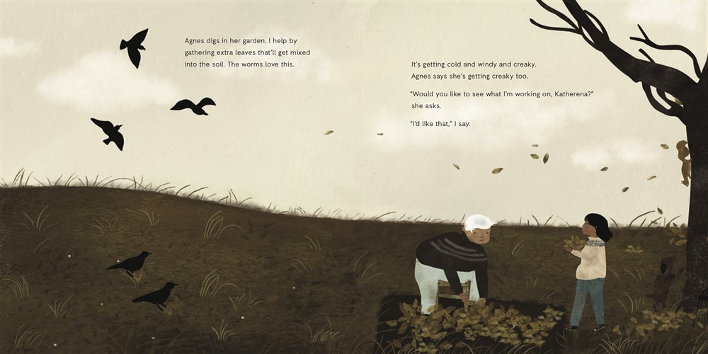
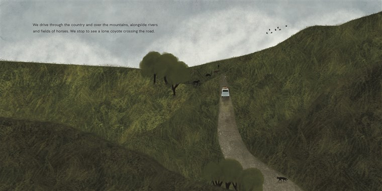
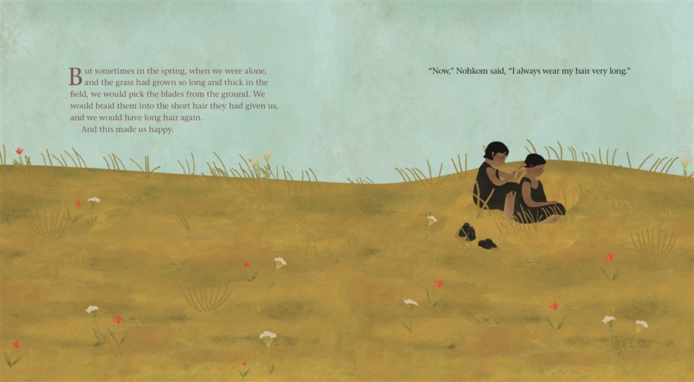
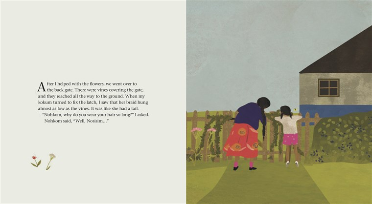

Canadian illustrator Julie Flett's books reveal the truth about modern Indigenous life
You're going to read, whether you recognize it or not, Indigenous values when you're reading our books," Flett said.
When We Were Alone and Birdsong.HighWater Press; Greystone Kids
By Alex Hazlett
12:01 PM CET
When Julie Flett illustrated her first children's book, The Moccasins, she thought that it would stay within the bounds of her Indigenous community. The book, written by Earl Einarson and published in , told the story of an Indigenous foster child who received a pair of moccasins from his foster mother.
I thought that we were going to be sharing the book with our community members, and that was great. That was everything,Flett said.
She hadn't counted on the librarians who introduced the book to non-Indigenous readers and gave it a life far beyond its expected audience, she said. That wider audience ultimately changed Flett's career trajectory, as well.
One of her most recent releases, Birdsong, which she both wrote and illustrated, this month won the TD Canadian Children's Literature Award, which recognizes the best Canadian book for children and comes with a $50,000 prize. The awards and recognition of her influence have been steadily gaining momentum.
It's just really something to celebrate, without a question, to open access to all of these incredible Indigenous makers, Flett said. Incredible and weird at the same time, because why did it take so long?
November is National Native American Heritage Month. It also includes Thanksgiving, which stands with Columbus Day (increasingly celebrated as Indigenous People's Day) as a holiday activists are pushing to redefine. Central to that effort is highlighting the history and experiences of Native and Indigenous peoples in North America and acknowledging that those communities still exist in vibrant ways.
For so many years, Indigenous stories were siloed, said Flett, who is Red River Métis and Swampy Cree on her father's side and of Scottish and Irish ancestry on her mother's side. Indigenous literature was dismissed as valuable only for members of Indigenous communities and thought of as holding limited importance for everyone else.
I'm excited and thrilled we're celebrating Indigenous stories, she said, and then also heavy-hearted, because our stories have been there from the beginning.
Disrupting Western, non-Indigenous perspectives
In Birdsong, a dog is introduced with a Cree name almost as an aside. Cree words in her books are generally not italicized, although a pronunciation guide may be included. Part of Flett's mission is to shore up endangered Indigenous languages like Cree and Michif, which she's done through books about the alphabet and colors. Such books are familiar to parents who speak English, but they can be difficult to find for some languages, and basic instructional children's literature can have surprising repercussions.

Birdsong won the TD Canadian Children's Literature Award, which recognizes the best Canadian book for children and comes with a $50,000 prize. Greystone Kids
You're going to learn a lot about ... the Cree worldviews and values just through learning the colors,Flett said.
Jane Newland, an associate professor of French at Wilfrid Laurier University in Waterloo, Ontario, who is working on an article about Flett, said, What I absolutely love about Julie's work is there is this foregrounding of the Native languages, Indigenous languages.Flett's Michif alphabet book, Owls See Clearly at Night,throws the English alphabet into chaos, associating entries like the Northern Lights into a letter of the Michif alphabet. (C, if you're wondering.)
That is an intentional process of disrupting Western, non-Indigenous perspectives and providing an alternative worldview, not just for children, but also for the caregivers who are likely to be the ones reading the books aloud.
The more diversity we can bring to children through literature, the more they see that their point of view is not their own, said Heather Jessup, an assistant professor of creative writing at Dalhousie University in Halifax,Nova Scotia.
Flett's books are rooted in real natural landscapes like the Canadian prairies. The plants and animals are the ones that live in those areas. Characters are connected to the natural world as a matter of course — they are familiar with when birds migrate and frogs come out in the spring. When they pick blueberries, they leave some for the birds.

Flett's books are rooted in real natural landscapes. Greystone Kids
You're going to read, whether you recognize it or not, Indigenous values when you're reading our books,Flett said. Those are reciprocity, generosity, Honorable Harvest.
Groups like We Need Diverse Books and accounts like The Conscious Kid have pushed for diversity and inclusion on children's bookshelves and promoted stories written by and featuring Black and Indigenous people and other people of color. Only 46 out of 4,035 books for children and teens reviewed in were by Indigenous authors, according to data compiled by the Cooperative Children's Book Center at the University of Wisconsin-Madison.
The wider publishing market has started to respond, including the literature giant HarperCollins Children's Books, which announced Heartdrum, an imprint focused on Native stories that will launch this winter.
I can't think of anything more hopeful than working with kids, but I also feel the responsibility and the privilege of being able to do this,Flett said. Her work has only in the last few years been able to bring a measure of financial stability, and she previously worked two or three jobs to support her book work, she said.
"Our voices need to be at the table"
Flett places her work in the larger context of advocacy for full recognition and inclusion of Indigenous peoples in all areas.
Our voices need to be at the table, our land stewards, our educators, our storytellers, our artists. Our leaders and caregivers, she said. At this point, it's just so vital ... vital for future generations, for our planet.

When We Were Alone, by David Robertson, illustrated by Julie Flett, won a Governor General's Literary Award. HighWater Press
Flett's art is gentle even when it deals with traumatic subjects, like Canada's history of residential schools in the book When We Were Alone, written by David Robertson, which won the 2017 Governor General's Literary Award in Young People's Literature. The schools removed Indigenous children from their parents and forbade them from speaking their Indigenous languages in an effort to accomplish what a report from Canada's Truth and Reconciliation Commission termed cultural genocide.The United States has a similar history of Indian boarding schools.
Flett said that in working on the art for When We Were Alone, it was important to avoid traumatizing the children and adults who might read it or re-traumatizing survivors of such schools.
The book follows a young girl asking her grandmother why she does certain things, like wear colorful clothing or keep her hair long. Her grandmother explains how she went to a residential school where the people in charge took away such markers of her Cree identity and how she and her classmates resisted the efforts in small but meaningful ways.

When We Were Alone, by David Robertson, illustrated by Julie Flett. HighWater Press
We're getting our stories out very slowly and gently,Flett said. Her emphasis is on truth before reconciliation,and she sees fiction, especially children's literature, as a key part of that effort.
Robertson said: She's one of the best illustrators in Canada and one of the most gentle people I've ever met. She was the only person who could've illustrated 'When We Were Alone.'
Jessup compares Flett's books to the work of Mister Rogers in how her stories have an intentionally slow pace and much of the action is subtle. Flett said her experience as an introvert informs her books, with details — like the makeup of a family unit — purposefully left unspecified.
I want to leave it open,Flett said, so that, because our communities are so diverse, people can see themselves in the story.